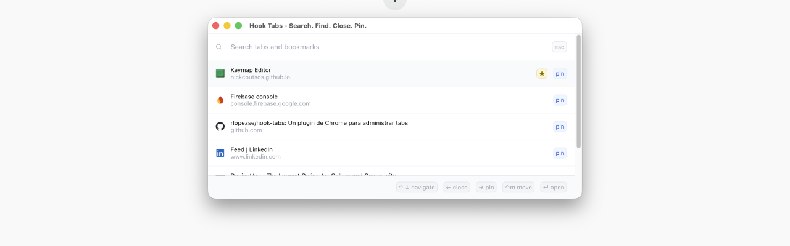
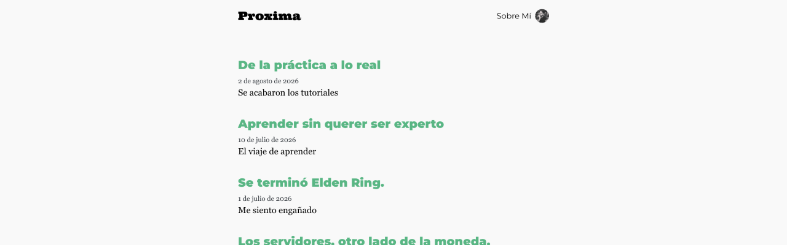
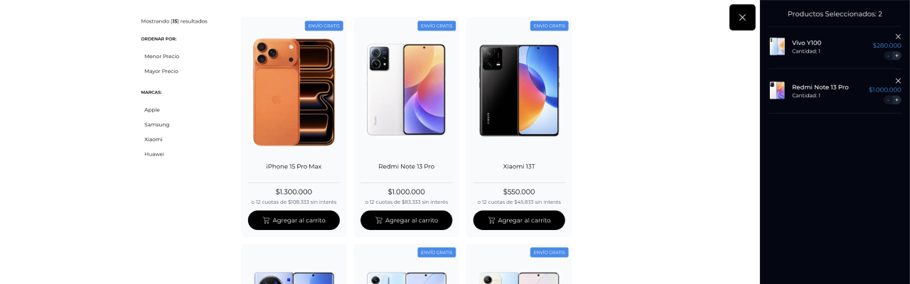

Hook Tabs is a personal project I created because I got tired of scrolling through tabs one by one to find a specific one, or relying on the mouse to do it.
I'm a software developer with over 10 years of experience building high-traffic digital products. I focus on turning business requirements into solid technical solutions, caring about code quality, metrics, and continuous improvement.

Hook Tabs is a personal project I created because I got tired of scrolling through tabs one by one to find a specific one, or relying on the mouse to do it.

Próxima is a personal blog I created because I wanted my own space to write, inspired by the minimalist design of overreacted.io. I put together the posts with help from Claude Code: I give it a story, it helps me with the narrative, and I finish adjusting it.

Pulsar is a personal project I created to explore and refresh my knowledge of React, TypeScript, and CSS, building an e-commerce front-end from scratch.